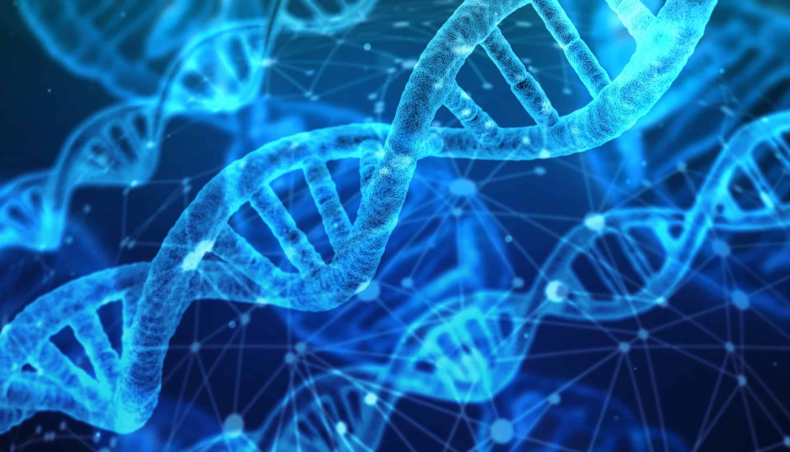

CSE

Library

Biotech
Karunya Institute of Technology and Sciences, was founded with the noble vision to raise professionals and leaders of high academic calibre and unblemished character, nurtured with a strong motivation and commitment to serve humanity. The institution is the fulfillment of the vision of its founders Late Dr. D. G. S. Dhinakaran and the present Chancellor Dr. Paul Dhinakaran. Established in 1986 as an Engineering College, it was granted an autonomous status in 1999 and declared Deemed-to-be University by the University Grants Commission (UGC) in recognition of its academic excellence by the Ministry of Human Resources Development under section 3 of the UGC Act, 1956 vide notification no 9-3-2000-U3 dated 23.6.2004 of the Government of India. Accredited by NAAC, the institution offers a wide array of Bachelors, Masters and Doctoral Degree programmes in various branches of Engineering, Biotechnology, Food processing and Agricultural Sciences. From a humble beginning of 180 students, the institution has rapidly grown to 8491 students and 452 faculty representing 18 academic departments. In the three decades of service to higher education, Karunya Institute of Technology and Sciences has made significant progression in teaching learning, research and consultancy, innovation and transfer of technology, community service and value education. Translating the vision of the Founders into action, the institution is currently engaged in finding solutions to human problems in the four major areas such as Water, Food, Healthcare, and Energy through scientific and technological interventions.
CSE
Library
Biotech
Karunya is a residential institution, hosts diverse, creative and talented people from the state of India and from different parts of the world with a safe, secure environment and a plethora of student activities, the campus life at Karunya is vibrant, colourful, entertaining and engaging.

Agriculture being the backbone of Indian economy, it has to be supported with emerging tools and one such tool is drone technology. Drones are being used for GIS mapping and other related works, having a potential to solve several problems in Agriculture. KITS has made it a mission to develop Drones for scouting lands and crops, inspecting weeds, monitoring and management of crops and monitoring and managing the grazing areas and health of livestock.